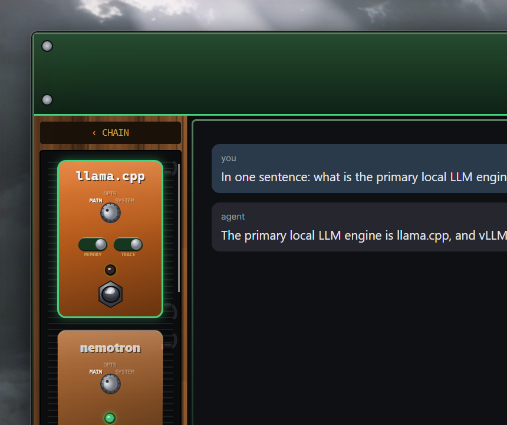
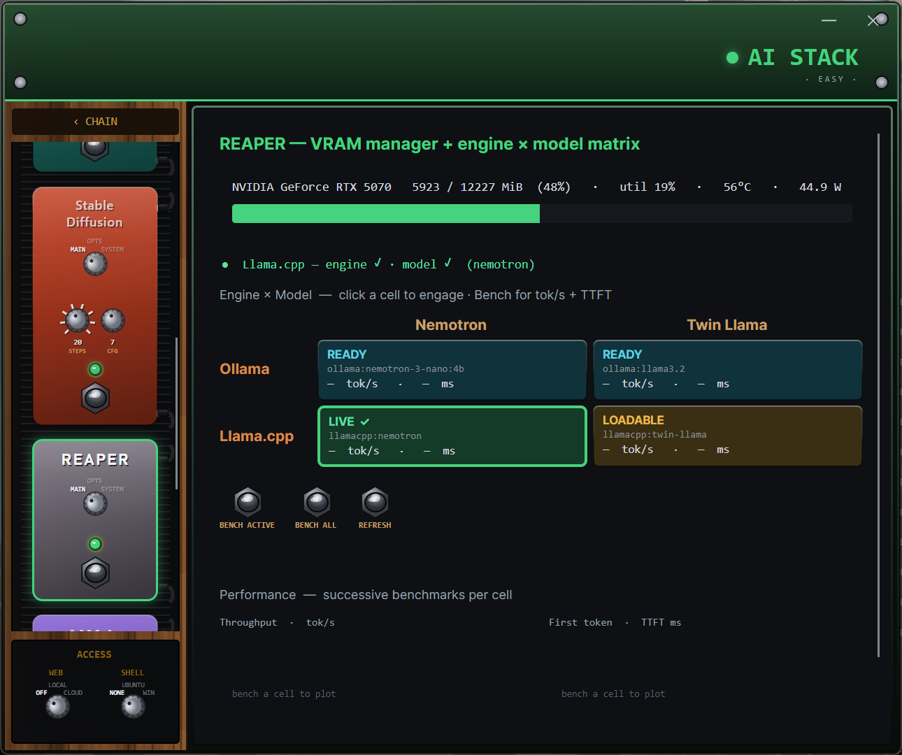
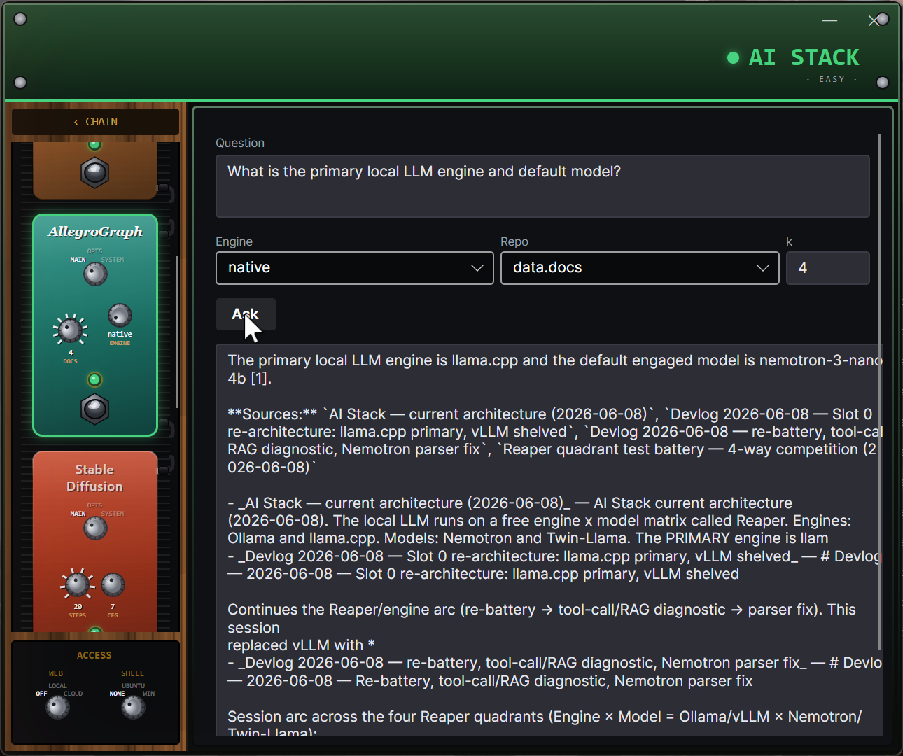

IRON & FEATHERS |
| AI Stack — local-first KG+LLM workbench github.com/donlindsay |
A private, offline-first AI workbench running natively in WSL2: AllegroGraph (RDF + SPARQL + RDFS++ reasoning) as the symbolic brain, and a free engine×model matrix — Ollama and llama.cpp serving Nemotron & Twin-Llama on a 12 GB Blackwell GPU — as the neural shell, behind a FastAPI shim and a native Windows Avalonia app skinned as a guitar pedalboard. Default: llama.cpp × Nemotron (~180 tok/s, CUDA sm_120). vLLM is shelved (dormant, swap-in-able).

The AI Stack pedalboard (EASY skin) — the Llama.cpp×Nemotron engine chain, and the agent confirming the live engine.


data.docs answering with citations.What the stack is, and how to run it.
Top-level orientation and usage.
The current engine / serving design.
Dated development logs — newest first.
Audits, serving, and test reports.
Hardware/software audits and code review.
Serving engines and ops.
Benchmarks, diagnostics, stress reports.
Structure generated from a SKOS taxonomy in AllegroGraph; each page carries Dublin Core + schema.org/SIOC JSON-LD (taxonomy · doap).
As I have been given, so I freely give:
The documentation on this site is licensed under Creative Commons Attribution 4.0 International (CC BY 4.0). Code and bundled components (AllegroGraph, Llama/Nemotron weights, &c.) retain their own licenses.